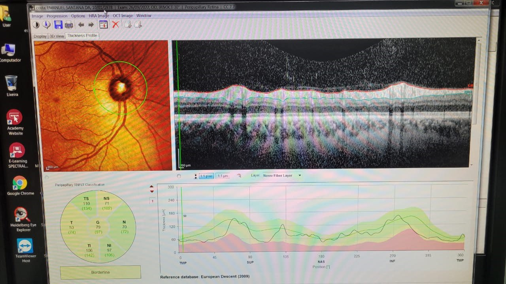

Minha história
Estou desempregado, apenas dando aulas esporádicas de musicalização com flauta doce para iniciantes (link no final) e não tenho condições de arcar com todos os custos imediatos que o tratamento exige. Faço o acompanhamento médico pelo SUS, no Hospital das Clínicas, HC, mas os insumos e óculos precisam ser comprados à parte.
Diagnóstico e transparência

Prestação de contas das doações nesta planilha pública
Tomografia de Coerência Óptica (OCT)